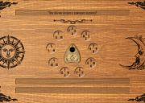

Story Master Toolkit NIMS (SMTK NIMS)

NIMS is an editor for writing handouts for LARPs. You create characters, write stories, prepare adaptations (character visions) and compile all this information to handout files. Also there are some extra tools: timeline, character filter, character groups, character relations, story investigation board and social networks drawing. NIMS is an interactive web page into two versions: single user offline version (ready for downloading) and multiuser online version (created by request). You need only web browser for using NIMS. NIMS is tested in Firefox and Chrome. Internet Explorer is not supported.
Guide by NIMS resources
Links:
Guide by NIMS resources
Welcome and support
Basic concepts and possibilities are described in presentation. You can try NIMS online by link. This is not a server version. It equals offline version. Documentation translation is not finished yet. I made screencasts about NIMS on my YouTube channel.
Community
Main Russian speaking community is vk group. Main English speaking community is facebook group Also you can email me directly ntsdk(dog)yandex(dot)ru.
Source code
SMTK NIMS source code is available in repo under Apache 2.0 license. In this repo stored support and internationalization information: presentation, documentation, base example and NIMS translations.
City Runner
City Runner project was made for city LARP game Arkham. On the other side. (RUS) and consist of server and gates editor. Game master creates gates schema. Gates consist of several trials for player. Gates schema loaded on the server and activated. After this player can enter the gates by the web link. Masters print gates link on QR code, players search QR-codes and solve trials. Master interface is built for desktops. Players interface is for smartphones.
Cyber-City

Cyber-City project was made for pavilion LARP game Battletech 3: Arena's cost. (RU) There was a big developers team (RUS). Cyber-City is a game portal with information layer. It includes: banking, virtual possessions (stocks, companies, etc.), mech battles support, instant messages player-player and player-master, ratings and other. All made from scratch by Java+Tomcat+MySQL.
Visualisation of Data Mining algorithms: K-Means vs. Fuzzy C-Means

Some time ago I need comprison of K-Means and Fuzzy C-Means clustering algos. I made visualisation for this task. There are some hardcoded values now - 4 clusters with 50 points. Cluster size is fixed. Centroids initialization takes 4 random points from existing points. Then clustering starts. Each cluster has own color. Fuzzy C-Means colors points in color mix. K-means color points by nearest centroid. Also convex hull is drawn for each cluster. Earlier there were centroid tracks but after fabric.js update this reature is broken by unknown reason.
Games

I took part in three Global Game Jams. In 2014 we made Unstable Willy - platform game for two players. In 2015 Ink Must Flow - platform game with experimental physics. In 2016 - Twitch Plays OiT9ja - crowd voting game for Twitch chat.